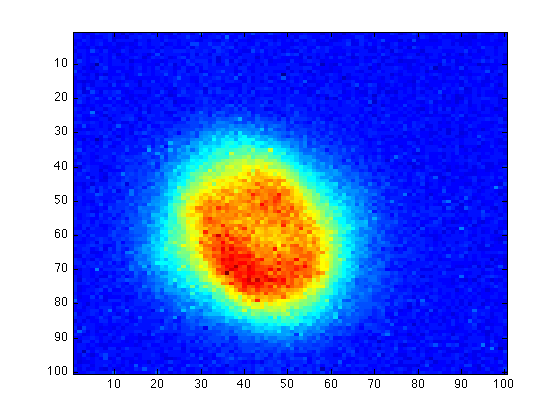
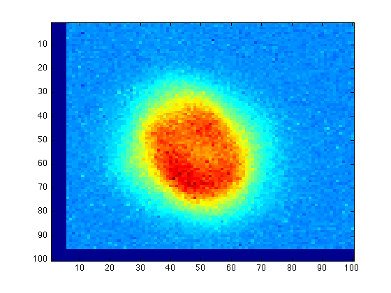

function imr=imshift(im,nr,nc)
The function imshift(im,nr,nc) shifts an image im by nr rows and nc columns (which can be either positive or negative). The shifted image is saved as imr.
In this example, we are trying to shift the image im so that the structure is located at the center. To do this, we have found nr=-5 and nc=5.
imagesc(im)
First step is to find the size of the input image im so we can allocate necessary space for the output (shifted) image imr:
[a,b]=size(im)
a = 100 b = 100
Construct a zero array for imr:
imr=zeros(size(im));
Now we need to find the indices of the "useful" part of im. We calculate the shifted row indices of im first:
tr=(1:a)-nr;
This is equivalent to moving the image vertically, and every index with value smaller than zero or larger than the size of the box is outside the image boundary. Therefore we need to find where are those "meaningful" row indices:
ix=find((tr>0)&(tr<=a));
Note that every element of ix is an index of a "meaningful" element of tr, and every element of tr is an index of the original image im.
We therefore define a new tr with these elements only:
tr=tr(ix);
This is the row indices of the "useful" part of im.
We now apply the same procedure to the column indices:
tc=(1:b)-nc; ix=find((tc>0)&(tc<=b)); tc=tc(ix);
Therefore tc is the column indices of the "useful" part of im.
Another important thing is to find the correct location for the "useful" part of im. The boundary at the top is 1 if the original image is shifting upward (nr negative) and 1+nr if it's shifting downward (nr positive), so we have
r1=max([1,nr+1])
r1 =
1
Similarly, the boundary at the bottom should be a+nr if the original image is shifting upward (nr negative) and a if it's shifting downward (nr positive), so we have
r2=min([a,nr+a])
r2 =
95
Do the same job to the column indices:
c1=max([1,nc+1])
c1 =
6
c2=min([b,nc+b])
c2 = 100
We can now assign the "useful" part of im to the correct location of imr. Recall that the default value of imr is zero, so every pixel beyond the range (r1:r2, c1:c2) will be zero.
imr(r1:r2,c1:c2)=im(tr(1):tr(end),tc(1):tc(end));
The shifted image is
imagesc(imr)